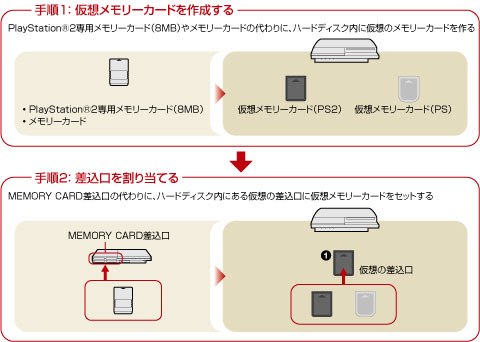
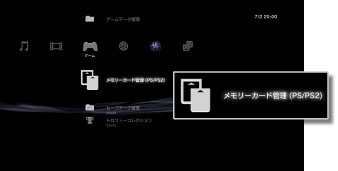

ゲーム > PlayStation®2 / PlayStation®規格ソフトウェアを遊ぶ > セーブデータについて
セーブデータについて
PlayStation®2 / PlayStation®規格ソフトウェアのセーブデータは、ハードディスク内に作成した仮想メモリーカードに保存されます。仮想メモリーカードは、作成後に差込口を割り当てることにより、利用できるようになります。 （メモリーカード管理（PS / PS2））で表示できます。
（メモリーカード管理（PS / PS2））で表示できます。
重要
- PS3™では、一部のPlayStation®2およびPlayStation®規格ソフトウェアが、従来のPlayStation®2およびPlayStation®と異なる動作をする場合や、適切に動作しない場合があります。
- また、一部のPS3™では、PlayStation®2規格ソフトウェアの再生に対応していません。詳しくは［再生できるディスクの種類について］、各地域のWebサイト、または製品同梱の取扱説明書をご覧ください。

仮想メモリーカードを作成する
1. |
 |
|---|---|
2. |
|
 （ゲーム）から
（ゲーム）から （新しい仮想メモリーカードの作成）を選ぶ。
（新しい仮想メモリーカードの作成）を選ぶ。ヒント
仮想メモリーカード名やアイコンは、オプションメニューの［情報］から変更できます。
差込口を割り当てる
1. |
|
|---|---|
2. |
使いたい仮想メモリーカードを選び、 |
3. |
［差込口割り当て］を選ぶ。 |
 ボタンを押す。
ボタンを押す。ヒント
- ソフトウェアによっては、使用する差込口が指定されています。詳しくは、ソフトウェアの解説書をご覧ください。
- ゲーム中に差込口を割り当てることもできます。ワイヤレスコントローラのPSボタンを押し、表示された画面で［差込口割り当て］を選びます。